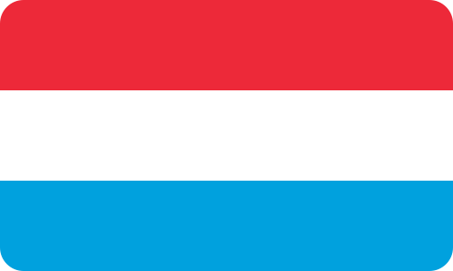
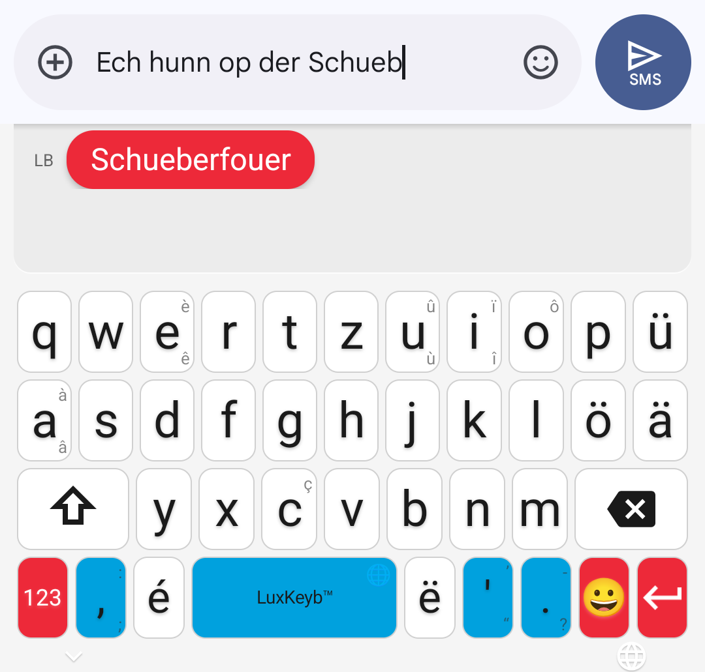
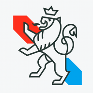
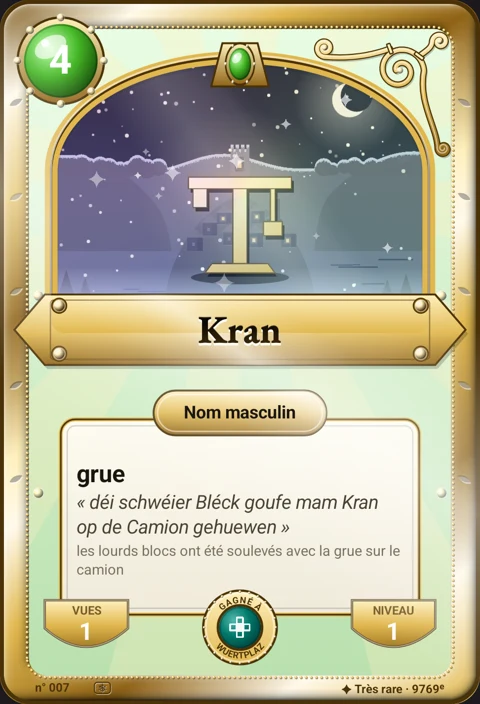
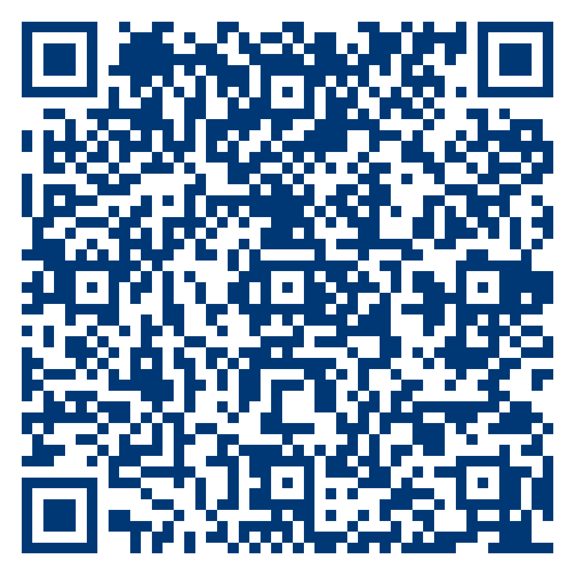
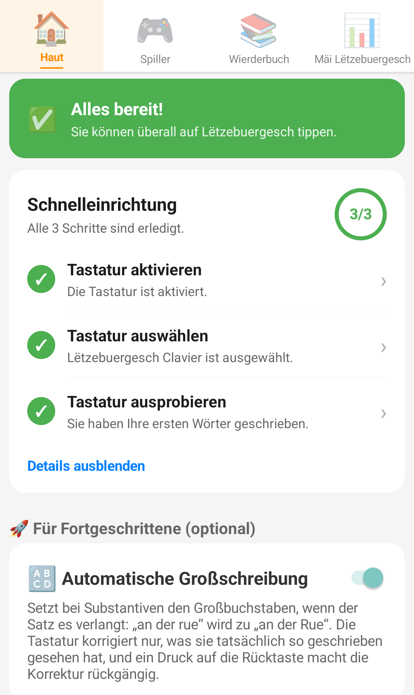
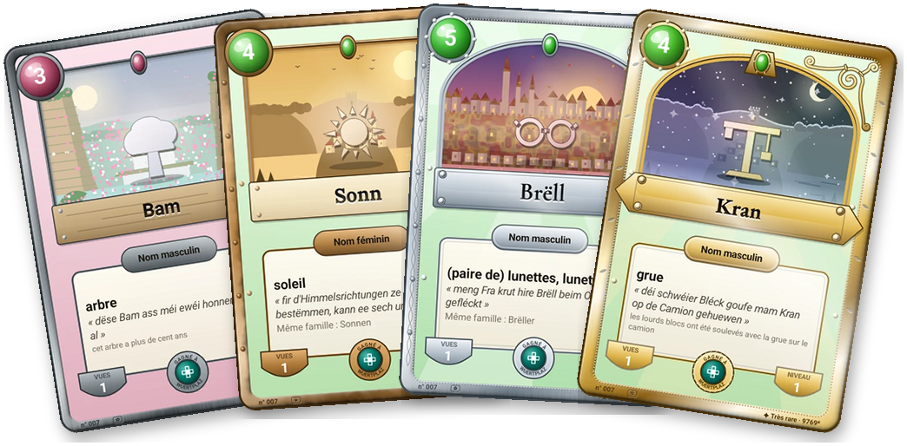

Dasselbe Faltblatt ohne Farbflächen: Farbe tragen nur noch Titel, Aufzählungszeichen und Linien. Das ist die Version für Auflagen von mehreren Dutzend.
Druck: A4 quer, „Tatsächliche Größe“ (100 %), Kopf- und Fußzeilen aus: in einem anderen Maßstab liegen die Falzlinien nicht mehr zwischen den Feldern. Für manuellen Duplexdruck zuerst die Vorderseite drucken, das Blatt über die kurze Kante wenden und wieder einlegen, dann die Rückseite drucken. Falzen: das linke Feld nach innen, dann das rechte darüber.
Vorderseite, Felder 1 · 2 · 3 (3 ist die Titelseite)
À faire validerNoch nicht von Muttersprachlern geprüft
LËTZEBUERGESCH CLAVIER
Luxemburgisch, in jedem Moment Ihres Tages
Morgens, eine Nachricht an die FamilieDas Wort erscheint, bevor Sie es zu Ende getippt haben. Tippen Sie „Schueb“, sie schlägt „Schueberfouer“ vor.
Die Hände voll, bei der Arbeit oder zu HauseTippen Sie auf das Mikro und sprechen Sie: Ihr Satz schreibt sich auf Luxemburgisch.
Der Finger rutscht auf die falsche TasteSie fängt den Fehler auf: „Kafi“ wird „Kaffi“.
Ein Wort fällt Ihnen nicht einDas Wörterbuch gibt es Ihnen, auf Deutsch oder auf Luxemburgisch, auch ohne Netz.
Abends, fünf Minuten spielenJedes gefundene Wort wird eine Karte Ihrer Sammlung.
Kostenlos · Was Sie tippen, bleibt auf Ihrem Telefon · famibelle.github.io/LuxKeyb
Däi Lëtzebuergesch, op dengem Telefon.

Warum
Warum eine luxemburgische Tastatur?
Ihr Handy „korrigiert“ Ihr Luxemburgisch ins Deutsche oder Französische.
ë und ä verstecken sich bei jedem Wort in einem Akzentmenü.
Sie zögern bei jeder Nachricht bei der Rechtschreibung.
Sie können es sprechen, aber nicht schreiben.
Diese Tastatur ist für Sie gemacht.

« Op der Kiermes iessen ech ëmmer Gromperekichelcher »
Innen: die Installation Schritt für Schritt, was sie für Sie tut, und wie Sie spielend damit lernen. Klappen Sie das Faltblatt auf.

LËTZEBUERGESCH CLAVIER
Sie sprechen es. Jetzt schreiben Sie es auch.
Tippen Sie „Schueb“die Tastatur schlägt „Schueberfouer“ vor
ë · ä · éjeder Buchstabe hat seine Taste, kein Suchen mehr
SprechenMikro antippen, Satz sagen, schon steht er da

« Op der Kiermes iessen ech ëmmer Gromperekichelcher »

Code scannen100 %gratis
Rückseite, Felder 4 · 5 · 6 (Innenseite, von links nach rechts)
À faire validerNoch nicht von Muttersprachlern geprüft
Los geht's
Installation in 4 Schritten
Öffnen Sie die Google-Play-Seite, es ist kostenlos
Scannen Sie diesen CodeMit der Kamera darauf zielen: Die Google-Play-Seite öffnet sich, Sie müssen nur noch auf Installieren tippen
Installieren Sie die AppÜber Google Play, wie jede andere App: Installation und Updates automatisch.
Aktivieren Sie die Tastatur in den EinstellungenEin Knopf in der App führt direkt zum richtigen Android-Bildschirm. Das System zeigt dann eine Warnung zur Eingabe: Sie ist allgemein, Android zeigt sie bei jeder Drittanbieter-Tastatur, und diese hier sendet nichts von dem, was Sie tippen.
Auswählen und schreibenDie Tastaturauswahl öffnet sich: Wählen Sie Lëtzebuergesch Clavier und tippen Sie Ihr erstes Wort.

Funktionen
Was sie für Sie tut
1Tippen, sie schlägt vor
Tippen Sie „Schueb“, sie schlägt „Schueberfouer“ vor. Ein Antippen, und das Wort steht da.
2Sprechen, sie schreibt
« Op der Kiermes iessen ech ëmmer Gromperekichelcher »
Tippen Sie auf das Mikro und sprechen Sie Ihren Satz: Er schreibt sich auf Luxemburgisch.
Und zum Lernen
Lernen beim Tippen
🎮 Sieben Spiele Wortsuche, Anagramme, ein Wort in sechs Versuchen, Lückensätze, Zahlen, Kreuzworträtsel, Wörter einsetzen.
🃏 Ein Kartenheft jedes gewonnene Wort wird eine Karte, und die Wörter, die Sie tippen, bringen sie voran.

📖 Ein Wörterbuch DE ↔ LB ein Wort fällt Ihnen nicht ein? Es übersetzt in beide Richtungen, ohne Netz.